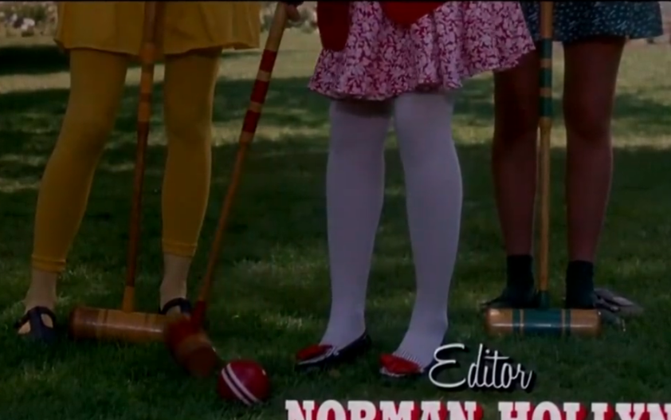

Heathers
故事梗概
这部电影中文名译作《希德姐妹帮》，讲的是学校（应该是高中）里的一帮漂亮、蛮横的姐妹的故事。这帮姐妹除了女主，三个人名字都叫Heather，姓氏却不同（当然估且不计这种巧合的概率，人家是艺术作品嘛），女主名叫Veronica Sawyer。在电影中每个人代表一种颜色，Heather Chandler是她们中的老大，代表的颜色是红色；Heather McNamara是成员之一，代表的颜色是黄色；Heather Duke是第三个成员，代表的颜色是绿色，女主Veronica则是蓝色。
Veronica虽然跟她们一起打球，但其实没有完全融入她们，她自己也认为她只是利用她们的名气而已。同时，虽然Veronica与Heathers一起玩，但是她仍然惦记自己曾经的Nerd朋友，并且非常不爽另外三人取笑学校里的胖妹Martha。


后来女主遇到了Jasson Dean，一个喜欢干出格事情的转校生，Jasson的撩妹技能绝壁满分，出现的时机总是很对。有天Chandler叫女主去参加大学生的Party，大家懂的，这种party叫女高中生去都是给那些寂寞猥琐大学男解闷用的，显然Veronica意识到了这一点并且十分反感，而爱好虚荣的Chandler就不一样了，虽然很不情愿但还是给人上了，Veronbica表示想走，Chandler很不屑她并且骂了她一顿，所以女主跑回家写日记去了，日记的内容以发泄为主，其中也包含了想要杀了Chandler的冲动，撂下笔的时刻Jasson正巧从她家窗户爬进来，女主还处在焦躁中，于是乎俩人跑到后院去激情来了一发。
事后，俩人就跑去Chandler家，Chandler家中只有她自己在睡觉，俩人决定恶搞她一番，做一个恶心的早茶给她喝，女主调了个橙汁加牛奶（讲真我想象了一下味道，估计也不会太差吧），而Jasson直接倒了一杯清洁剂，Veronica表示清洁剂给丫喝了不得喝死啊，不行不行不行，结果端过去的时候拿错了（被子有盖），Jasson发现拿错了，啥也没说，Chandler看到两人一早来献殷情知道其中有诈，可是撂不下面子，表示老娘就是敢喝，于是一口闷，跪了。然后这时候Jasson有点小兴奋，Veronica虽然有点慌但也只是有点慌而已，然后俩人决定伪装成自杀，并且伪造了一封遗书，Jasson拟定一个愤世嫉俗的内容，而Veronica负责模仿笔迹。
可笑的是，他们竟然骗过了所有人（当然关于这一点逻辑是非常不严密的，现场肯定满是J和V的指纹，我想这一点也只能当作一种假设吧，就当是编剧在跟你说，你不信，没关系，但是万一真的发生了呢）。而更加愚蠢的是校方的回应，校方把此事当作青少年心理教育的反面教材大肆宣传，同时学校里很多好事的学生和老师也借此炒作自己，有人积极制作Heather Chandler的学校年鉴页面，有人做报道，也有人积极接受一切电视台采访，这个人就是Duke。J和V似乎一点也不感到内疚，他们戏谑的讽刺那些电视里面虚伪的人，这一刻他们仿佛才是真正的道德卫士。
葬礼上，V受McNamara的邀请参加一个double date，她们俩跟一对同性恋基友Ram和 Kurt，当然，这样容易误解，是Ram约了McNamara，而基友两人肯定一起出席，McNamara觉得这样太尴尬，所以拉上V，V迫不得已同意了，当晚这对基友实在蠢到爆炸，玩推倒奶牛的游戏，结果奶牛倒下溅了V和M一脸牛翔，V气愤之下把Kurt推到牛粪中，扭头竟然看到了J，J说了一通浪漫的话把V撩嗨了，于是俩人跑了。第二天V发现Kurt造了谣说V昨晚给他们这对基友blow了，V非常恼怒，当晚J弄来两把手枪跟V说，这枪杀不了人，你把这对基友约出来，我们朝他们开枪，然后假装成他们两个互射，并且伪造两封遗书，这样当他们醒来被人发现时，一定糗大了。V竟然信了，于是谎称真的要给他俩blow，把这对基友约到了树林，等他们脱了衣服，J和V开枪打死了两个人，然后J把准备好的矿泉水，以及同性恋遗书遗留在尸体旁。闻声而来的警察拿起矿泉水对另一名警察说，看到了吗，这一定是自杀，你还不明白吗。（为啥？因为在那个镇上，男人只喝啤酒，娘们才喝矿泉水233333，矿泉水几乎就是同性恋宣言了）。事实上，有一个警察听到了逃跑的J和V，两人狂奔到车中假装在车震，警察赶到，识趣的走了，两人见警察走了，没有停下，真的玩起了车震。事后V非常生气，跟J说你为什么骗我，这时候J说了一句话令我赞同不已，他说：你相信了我，只是因为你想要相信，你不敢面对你的的真实想法。You believed it because you wanted to believe. Your true feelings were too gross and achy for you to face.
事情又一次闹大了，大家真的信了这个谎言，Kurt的父亲在葬礼上说，“虽然我儿子是同性恋，但我依然爱他。”这句实在搞笑。而不嫌事大校方又一次借此炒作，Duke更是出尽风头。V受不了J了，决定离开他。J找到了Duke，敦促她去做老大，Duke穿上了红色的衣服，接替了Chandler的位子，而且她一发不可收拾，弄了一个反对自杀的请愿书，还找了全校的学生签了字（事实上每个学生看到的请愿书都不一样，她只是骗到了他们的签名）。Veronica看了请愿书，跟Duke闹掰了。当晚Veronica作了噩梦，梦里她帮助Jasson杀掉了Duke，事实上，梦里的她是想要杀掉Duke的，只是她仍然矛盾着，她拒绝伪造遗书，而Jasson则又一次指出了事实，他说，“你真的以为他们会在乎遗书的笔迹或是内容吗？”说罢他潦草的写下两个单词“Life Sucks”然后在Duke爱看的小说上注重标记出了“爱斯基摩”这个单词，接着把Duke杀掉了。梦中举行了葬礼，牧师说，她在最爱的小说上标记了“爱斯基摩”这个词，说明她深深地感到了被人疏离，就像遥远的南极一样。
Veronica和Duke
Duke的请愿书以及Duke当上老大，这些其实都是Jasson布的局。Veronica假装受不了压力自杀，Jasson当晚真的拿着枪去了Veronica家里，发现Veronica已经“死了”，于是说出了自己的计划，他说：“我很意外看到你也自杀了，虽然我是打算来杀掉你的。”而他把请愿书的内容改了，改成了所有学生都请求自杀，因为他们受不了这个世界了。Jasson走后第二天，Veronica决定去阻止Jasson，Jasson带了炸弹去学校。两人激烈的打斗，Veronica拿枪射伤了Jasson，她以为把Jasson打死了，但其实没有，而最终Jasson拆掉了所有的炸弹，把一个炸弹绑在自己身上，Veronica在校门口，Jasson走到她面前，从容地打开倒计时，说，假装我已经炸掉了学校，所有学校，那么你死了，你打算做什么？Let's pretend I blew up the school... all the schools. Now that you're dead, what are you gonna do with your life?最后炸弹爆炸，Jasson死了。Veronica抽了根烟，走回学校，跟学校的胖妹Martha说，我的舞伴（指Jasson）放我鸽子了，舞会那天我们去租个碟吃个爆米花吧。Hey, Martha. My date for the prom kinda flaked out on me. I was wondering, If you weren't doing anything that night, maybe we could rent some new releases and pop some popcorn.
简评
这部电影的演员演技没有什么亮点，它实在荒诞的不需要角色有什么出色的表演，这个故事并没有严丝合缝的逻辑，但是我前面说了，这就像是有人问你，你不信，但是我现在要你想，万一真的发生了呢。
Veronica其实是个单纯的女孩子，虽有一点腹黑，还有虚荣心，但内心想做个善良的人。她就是所有人的代表，而Jasson是一个看透了她的人，他深知每个人心中存在的恶念，他推波助澜，帮助Veronica杀了一个又一个人，而他敢于伪造自杀，也正是因为他知道人们爱慕虚荣，伪善。而Veronica在善恶之间纠葛，这从她杀Chandler就可以看出来了，当她看到Chandler喝了清洁剂倒地时，她第一时间说出的是：“不敢相信，我杀了自己最好的朋友。”而不是“天呐，我拿错了杯子”或者“为什么她喝了牛奶和橙汁会死”，这说明她在看到她喝或者在给她喝之前，就知道了那杯不是牛奶橙汁。所以她一定是真的想杀了Chandler的。而当她杀了那对基友时，她难以遏制自己的兴奋，竟然真的与Jasson车震了。这一切说明了Veronica的内心并不单纯，她真的希望他们死，而他们的死也真的能为她带来快乐。
就像Jasson说的，你相信了只是因为你想要相信。人都难逃这一困境，对于想要相信的，总是难以释怀。
而从Veronica那个杀掉Duke的梦中看到，当她和Jasson潜入Duke家，Jasson拿了刀子，Veronica阻止了Jasson，但是却说了一句，你不了解Duke，她不可能用这么脏的刀子，Jasson把刀子弄干净，Veronica看到自己在刀子上的倒影变成了Duke，她惊慌失措，告诉Jasson她绝不会帮他伪造遗书，这时Jasson才在纸上写下了Life Sucks两个单词。最可怕的是什么，最可怕的是，这个如此符合Jasson的人其实不是Jasson，而是Veronica自己！因为这是Veronica的梦，这说明Veronica早就意识到了自己多么想杀掉Duke，而她拒绝承认，他拒绝相信“人们真的不在乎遗书写了什么，人们只会相信自己愿意相信的”这个事实。同时，在Jasson拿出刀子时Veronica的反应看出来，那一刻她确实默许了杀掉Duke的想法，而当她看到了刀子上的倒影她才反悔。她真正不想杀了Duke的原因是她不想成为下一个Chandler，因为她知道Duke死了的话，她将会成为Chandler，她不想这样，她没有准备好成为自己所恨的人，她仍然想活在纯真的谎言之中。而此时这个粉饰太平的她再无力阻止她内心的Jasson，Jasson冲进Duke的房间杀了Duke，而葬礼上，大家欣然接受了这一切，相信了Duke是出于对生活的无奈而自杀，这一刻才让Veronica崩溃了，因为那个虚伪的她又一次输了。
而现实中，Veronica跟从了虚伪的自己，她决定阻止Jasson。看得出来Jasson是真的喜欢Veronica，但是他更加痛恨的是这所学校，这个世界，他想要毁了他痛恨的这一切，而Veronica阻止了他。要么他，要么学校，对于Jasson而言，只有这两个选项。当他从容选择自杀时，我看到的只有Veronica和Jasson苦笑背后的悲凉，Jasson失败了，他只能自杀，为什么Veronica没有拯救他。这一切都反了。Jasson痛恨所有人，他想要杀了所有人甚至他自己，因为这样他才能获得平静与快乐，而这是矛盾的，死了的人不会获得快乐，这就是为什么他最后说出那么一句话：Now that you're dead, what are you gonna do with your life?荒诞而矛盾，但是却说出了真相。你想要的是毁灭，而毁灭却只会给你带来毁灭。最后是福利。